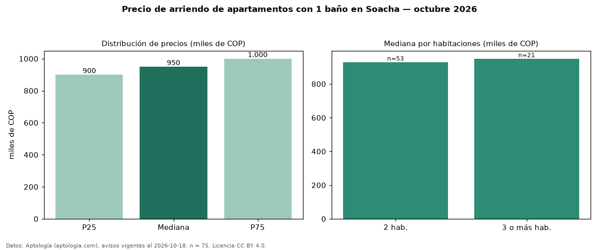

Precio de arriendo de apartamentos con 1 baño en Soacha — octubre 2026
En Soacha, la mediana de canon mensual de apartamentos con 1 baño es COP 950.000, según 75 avisos vigentes. Prácticamente coincide con la mediana de todos los apartamentos en arriendo de Soacha (COP 950.000, n = 145); este segmento reúne el 52 % de esos avisos. Por metro cuadrado, la mediana es COP 19.792/m² al mes (n = 67), 4 % por encima del conjunto de referencia (COP 19.098/m²). El área mediana anunciada es 48 m². El segmento con más oferta es el de 2 habitaciones (53 avisos, mediana COP 930.000); pasar de 2 habitaciones a 3 o más habitaciones cambia la mediana +2 %. La administración mediana declarada es COP 105.000 al mes (n = 28), aparte del canon. El estrato más frecuente es 3 (79 % de los avisos con estrato). 18 % de los avisos con el dato declara parqueadero. Datos: Aptología (aptologia.com), CC BY 4.0 — https://www.aptologia.com/arriendo/soacha. Archivos: PDF, CSV con las cifras y gráfica PNG.

| Avisos únicos | 75 |
|---|---|
| Percentil 25 | COP 900.000 |
| Mediana | COP 950.000 |
| Percentil 75 | COP 1.000.000 |
| Mediana por m² | COP 19.791 |
Fuente: avisos vigentes de portales inmobiliarios recopilados por Aptología, deduplicados (mínimo 30 avisos únicos por celda). Precios pedidos, no cerrados. Fecha: 2026-10-18.